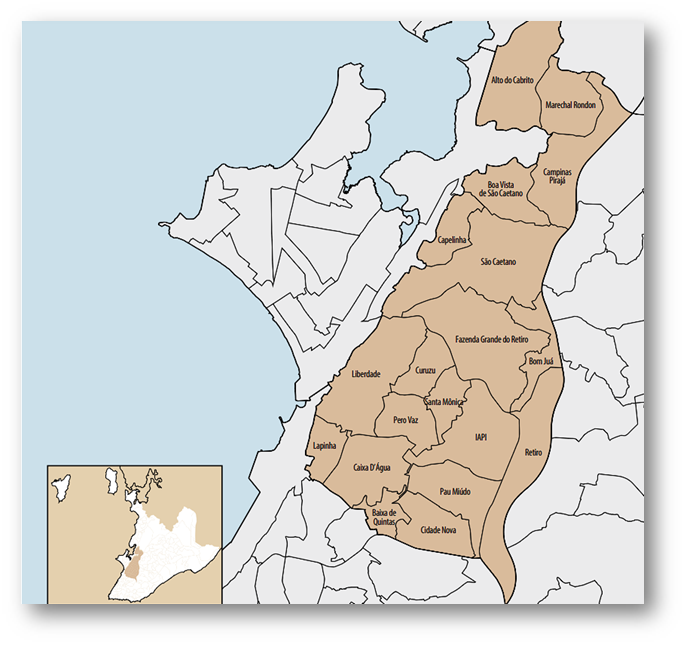
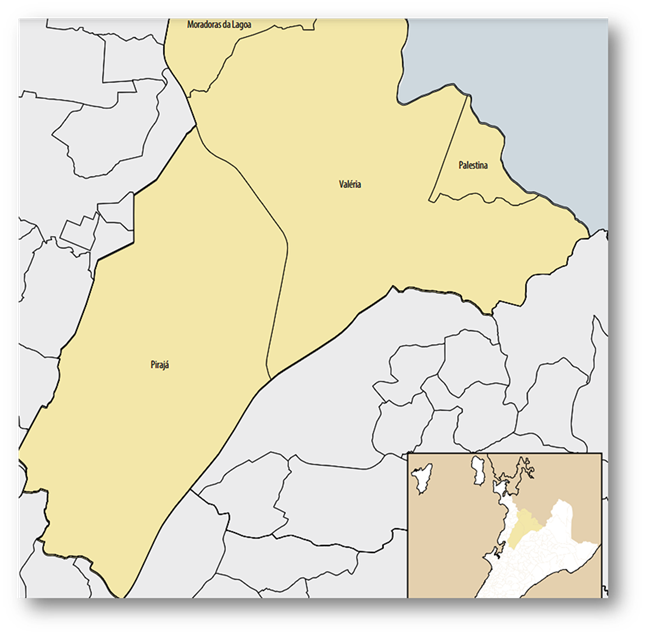
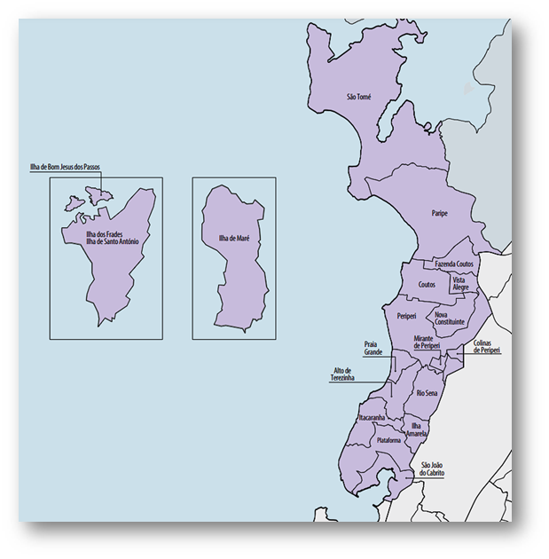
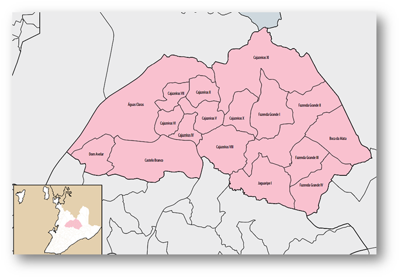
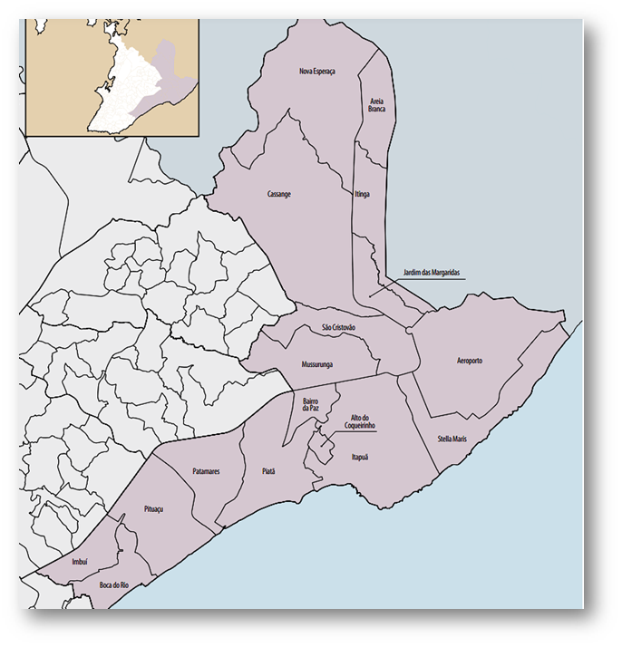

Análise do Índice de Violência por Bairros em Salvador
Objetivos da Análise
Esta análise visa aprofundar o perfil da criminalidade em Salvador, com foco no uso de armas de fogo e na previsão de incidentes específicos, como confrontos entre milícias e tiroteios. O objetivo é fornecer insights essenciais para o desenvolvimento de estratégias eficazes de segurança pública, contribuindo para a melhoria da qualidade de vida da população.
A finalidade dos gráficos é analisar e ilustrar a distribuição e a frequência dos diferentes tipos de violência em bairros específicos, permitindo uma visão clara dos locais com maior concentração de ocorrências criminais. Esses gráficos ajudam a identificar padrões, como os bairros mais afetados por homicídios, tentativas de roubo, e disputas, e oferecem insights para entender onde há maior necessidade de intervenção das autoridades. Com base nos dados visuais, é possível direcionar políticas públicas, melhorar o planejamento de segurança e implementar estratégias de prevenção e controle da violência, focando nas áreas mais vulneráveis e impactadas.

Dados Utilizados
A análise se baseia em um conjunto de dados abrangente, incluindo
registros de ocorrências policiais, informações socioeconômicas dos bairros, dados demográficos e
informações georreferenciadas. Esses dados permitem uma compreensão detalhada dos padrões de
criminalidade e suas possíveis correlações com fatores socioespaciais.
Os dados utilizados
nesta análise incluem:
- Registros de ocorrências policiais
- Informações socioeconômicas dos bairros
- Dados demográficos
- Informações georreferenciadas
Esse conjunto de dados abrangente permite uma compreensão detalhada dos padrões de criminalidade em Salvador e suas possíveis relações com fatores socioespaciais.
Técnicas de Aprendizado de Máquina Aplicadas
Nesta análise, foram empregadas diversas técnicas de aprendizado de máquina, como regressão logística, florestas aleatórias e redes neurais.
Essa abordagem permitiu identificar padrões complexos nos dados, prever a ocorrência de incidentes e classificar tipos específicos de crimes.
Número Total de Incidentes por Bairro
Este gráfico mostra a quantidade total de incidentes, englobando todos os tipos de violência nos bairros analisados. Fazenda Grande do Retiro lidera com o maior número total de incidentes, seguido de Beiru/Tancredo Neves e Valéria.
Pontos de Destaque: A contagem total de incidentes em Fazenda Grande do Retiro é um indicativo de que o bairro é um dos mais problemáticos em termos de segurança pública, não apenas pela quantidade de homicídios e tentativas de roubo, mas também por uma variedade de outros tipos de ocorrências. Beiru/Tancredo Neves e Valéria também apresentam um número elevado de incidentes, sugerindo necessidade de atenção constante.
Análise Estratégica: Estes bairros, devido ao número elevado de incidentes, devem ser foco de estratégias integradas de segurança, como projetos de policiamento orientado pela comunidade, parcerias com moradores locais e ações sociais para engajar a juventude e reduzir o recrutamento por grupos criminosos.
Fazenda Grande do Retiro (Região Administrativa VII) lidera com 96 incidentes, que representam 3,51% de todos os casos registrados no período;
Fazenda Grande do Retiro (Região Administrativa VII) lidera com 96 incidentes, que representam 3,51% de todos os casos registrados no período;
Seguido por Valéria (Região Admnistrativa X) com 69 incidentes (2,52%) se destacam em número de incidentes; Outros bairros com altos índices incluem Lobato (68 incidentes, 2,49%) e São Cristóvão (63 incidentes, 2,31%);
Disputas por Bairro
Descrição Geral:Este gráfico concentra-se nas ocorrências classificadas como "disputas", com o bairro Beiru/Tancredo Neves no topo, seguido de Engenho Velho da Federação e Fazenda Coutos. Disputas geralmente envolvem conflitos interpessoais ou territoriais, muitas vezes ligados a rivalidades de gangues ou disputas por territórios de tráfico de drogas.
Pontos de Destaque: A alta frequência de disputas em Beiru/Tancredo Neves e Engenho Velho da Federação indica uma necessidade de intervenções que abordem o contexto dos conflitos, seja por meio de mediação ou de intervenção policial. Esses conflitos podem ter repercussões severas para os moradores, especialmente se se intensificarem.
Análise Estratégica:Análise Estratégica: Medidas para abordar essas disputas podem incluir iniciativas de mediação comunitária, programas de integração social e segurança preventiva. Estes bairros beneficiariam também de atividades de educação e cultura que promovam a convivência pacífica.
Homicídios e Tentativas de Homicídio por Bairro
Descrição Geral: Este gráfico foca nos bairros com maior número de homicídios e tentativas de homicídio, com destaque para Lobato como líder, seguido de Fazenda Grande do Retiro e Beiru/Tancredo Neves. Esses números são um sinal preocupante, pois homicídios e tentativas de homicídio representam a forma mais grave de violência letal.
Pontos de Destaque: A elevada ocorrência de homicídios em Lobato e Fazenda Grande do Retiro pode indicar a presença de conflitos armados, atividades de gangues ou tráfico de drogas nessas áreas. Estes bairros apresentam riscos elevados à segurança pública e precisam de intervenções específicas de pacificação e controle de crimes letais.
Análise Estratégica: A concentração de homicídios nestas áreas sugere a necessidade de uma resposta coordenada, que inclua policiamento comunitário, investigações intensivas e programas de prevenção à violência, como iniciativas de mediação de conflitos.
Tentativas de Roubo por Bairro
Descrição Geral: Neste gráfico, analisam-se as tentativas de roubo, onde Fazenda Grande do Retiro aparece como o bairro com mais incidentes deste tipo, seguido por São Cristóvão e Brotas. Esse tipo de ocorrência impacta diretamente o sentimento de segurança da população.
Pontos de Destaque: A prevalência de tentativas de roubo em Fazenda Grande do Retiro e São Cristóvão sugere vulnerabilidades na segurança local, possivelmente associadas a falta de iluminação pública, patrulhamento policial insuficiente ou presença de áreas isoladas.
Análise Estratégica:Análise Estratégica: Estes bairros podem se beneficiar de medidas como melhoria na iluminação pública, instalação de câmeras de segurança, aumento de rondas policiais e campanhas de conscientização para que a população adote práticas de segurança pessoal.
Bairros com Baixa ou nenhuma Incidência: Em contrapartida, bairros presentes na orla ou próximos a orla de Salvador como os das Regiões Administrativas VI e IV apresentam índices de violência muito menores em relação a outras R.A.´s alguns bairros dessas R.A.´s nem tem ocorrências registradas. A diferença nos níveis de violência entre esses bairros e os de alta incidência aponta para um contraste entre áreas com melhor infraestrutura e maior presença de segurança privada. Esses bairros são, em geral, turísticos ou residenciais de classe média-alta. VI Barra/Pituba
O Engenho velho da Federação e a Federação, bairro apesentaram juntos 99 ocorrências, sendo os maiores índices ações e operações policiais, disputas territóriais e roubos ou tentativas de roubo
A Boca do Rio e Mussurunga, sendo bairros de classe média-baixa, ainda que presentes nessa R.A. que contém as ocorrências espeficadas, somados dão um total de 63, onde são distribuidos em ações e operações policiais, homicídios e disputas territóriais.
Tipos de Ocorrências de Violência por Bairro
Descrição Geral: Operações realizadas pela Polícia com o intuito de manter o controle da segurança com abordagens de rotinas, operações planejadas para capturas de certos integrantes de facções e patrulhas diárias e noturnas;
Descrição Geral: Operações realizadas pela Polícia com o intuito
de manter o controle da
segurança com abordagens de rotinas, operações planejadas para
capturas de certos integrantes de facções e patrulhas diárias e noturnas;
Este gráfico
nos revela como a atuação policial tem sido distribuída pelos bairros de
Salvador e permite uma análise de sua eficácia. A presença policial não é uniforme e
reflete limitações na capacidade de resposta, bem como possíveis variáveis políticas
e de alocação de recursos, onde esse gráfico leva em consideração:
- Ação Policial (Patrulha, Abordagens de rotina, rondas.....)
- Operação (Planejamento policial para invasões em determinados locais com o objetivo de capturar, apreender....)
Com um total de 546 ocorrências de ações policiais, nesse gráfico só os 10 primeiros bairros representam aproximadamente 56% das ocorrências, com destaque para: Fazenda Grande do Retiro (Região Administrativa VII) e Águas Claras (Região Administrativa III):Águas Claras se destaca pela alta presença policial em incidentes violentos, junto com F.Z.G. do Retiro,com mais de 15% dos casos acompanhados pela polícia. Isso sugere que a área recebeuma atenção maior por parte das forças de segurança, possivelmente em resposta à escalada de violência recente.
Ainda sobre Fazenda Grande do Retiro, o bairro possui os maiores indice de ações e operações policial, isso pode significar que o bairro pode estar sendo monitorado de perto para prevenir o alastramento da violência ou estabilizar uma situação de conflitos locais entre facções.
Em relação ao bairro de São Marcos (Região Administrativa IX) com 26 ações policiais e nenhuma operação policial, o que mostra um acrescimento consideravel da movimentação polical pela região, porém sem demonstrações governamentais de um planejamento polical para operações ou outras possíveis medidas para diminução dos conflitos via disputa.
Média de Idade das Vítimas por tipo de crime
Descrição Geral: Operações realizadas pela Polícia com o intuito de manter o controle da segurança com abordagens de rotinas, operações planejadas para capturas de certos integrantes de facções e patrulhas diárias e noturnas;
Descrição Geral: A faixa etária média das vítimas por disputa territórial é de 28 anos, o que representa uma ligação com a falta de infraestrutura e fatores socioeconômicos pois, se tratando de bairros periféricos, parte dessas vítimas são jovens que muitas vezes estão inserido no contexto de facções criminosas.
Ocorrências como Suícidio e Briga apresentam médias de idade mais altas, com as repectivas idade de 44 e 37 anos, indicando que, em média, vítimas desses incidentes são mais velhas em comparação com outros tipos de crimes. Em contrapartida, crimes como Ataque a civis têm uma média de idade mais baixa.
Crimes mais violentos, como Sequestro/Cárcere Privado e Tortura, também apresentam médias de idade relativamente altas, o que pode indicar que esse grupo etário está mais vulnerável ou exposto a esse tipo de crime.
Ocorrências por dia da semana e horário
Este gráfico de calor mostra a distribuição das ocorrências de crimes ao longo dos dias da semana e das horas do dia. A intensidade das cores representa o número de ocorrências, com o amarelo indicando um número mais alto de eventos e o roxo um número mais baixo. Abaixo estão as principais observações:
Dias com Mais Ocorrências:
⦁ As sextas-feiras e segundas-feiras apresentam um volume de ocorrências significativamente mais alto durante a maior parte do dia, especialmente à tarde.
⦁ No sábado, também há um aumento nas ocorrências, mas com intensidade menor do que na sexta-feira.
Horários com Pico de Ocorrências:
⦁ O horário entre 14h e 19h concentra a maior parte das ocorrências ao longo dos dias da semana, especialmente na sexta-feira. Esse período do dia tende a ser um horário de pico em que mais crimes ocorrem, sugerindo maior exposição da população nesse intervalo de tempo.
⦁ Em contraste, as ocorrências são muito baixas entre 0h e 5h da manhã, o que é esperado devido ao menor movimento de pessoas nesses horários.
Padrões de Crimes no Final de Semana:
⦁ No domingo e sábado, há uma redução nas ocorrências durante a madrugada e um aumento a partir da tarde, indicando que o período de maior risco nestes dias é durante o fim da tarde e início da noite.
Dias de Menor Incidência:
⦁ Quinta-feira e quarta-feira apresentam um número menor de ocorrências comparadas com sexta-feira e segunda-feira, indicando que esses dias são relativamente mais tranquilos.
Conclusão e Implicações:
⦁ Este padrão pode sugerir que as atividades de policiamento preventivo e de segurança devem ser intensificadas durante as tardes de sexta-feira e segunda-feira, especialmente entre 14h e 19h.
⦁ Para o final de semana, ações de prevenção poderiam ser mais focadas no período da tarde e início da noite, particularmente nos sábados.
Regiões Administrativas com mais evidências:
Região Administrativa VII (São Caetano/Liberdade)
Fazenda Grande do Retiro é mencionada como uma área com alta incidência de violência, liderando em número de incidentes e com presença significativa de ações e operações policiais.
Essa região também abrange o bairro Pero Vaz, destacado por disputas territoriais.
Região Administrativa VIII (Cabula/Beiru)
O bairro Beiru/Tancredo Neves é citado como uma das áreas com mais ocorrências de confrontos armados e disputas territoriais
Região Administrativa X (Valéria)
Valéria é um dos bairros com alta incidência de incidentes violentos, especialmente conflitos armados e disputas de facções criminosas.
Região Administrativa II (Subúrbio/Ilhas)
Os bairros Lobato, Fazenda Coutos, e Periperi apresentam altos índices de violência, especialmente em relação a homicídios e confrontos armados. Lobato, em particular, lidera em homicídios.
Região Administrativa III (Águas Claras)
O bairro Águas Claras se destaca pela alta presença policial em incidentes, possivelmente como resposta a uma escalada recente de violência.
Região Administrativa IV (Itapuã/Ipitanga)
Mussurunga está entre os bairros mencionados com disputas territoriais e alta vulnerabilidade a crimes violentos.
Essas regiões concentram os bairros com os maiores índices de criminalidade e são frequentemente evidenciadas como áreas de alta violência, onde ocorrem disputas territoriais, homicídios e outras formas de ocorrências com armas de fogo.
Previsão de Incidentes Futuros
Utilizando o modelo Prophet, estess último gráfico projetam a violência para os próximos meses, com o objetivo de antecipar cenários e alinhar intervenções preventivas. Observa-se que:
Bairros como Fazenda Grande do Retiro E Beiru/Tancredo Neves apresentam uma tendência de aumento nos próximos meses, o que exige atenção e preparação.
REFERÊNCIA EXTERNA:
Para essa análise foram utilizado os dados e as métricas do Fogo Cruzado Instituto Fogo Cruzado.
O Instituto Fogo Cruzado é um instituto que produz dados, pesquisa e conteúdos sobre violência armada, fazendo o mapeamento de tiroteios e disparos de arma de fogo nos estados do Rio de Janeiro, Pernambuco e Bahia, começando suas atividades em 2016 através da jornalista Cecília Oliveira que percebeu a falta de informações mais detalhadas sobre índices de criminalidade com armas de fogo;
Em 2021, o Instituto Fogo Cruzado se transformou em uma organização sem fins lucrativos, atualmente contando com uma equipe de cerca de 20 pessoas. A organização passou a produzir mais de 20 indicadores inéditos sobre violência armada, utilizando uma metodologia original e inovadora oferecendo também de forma gratuita cursos de jornalismo e formação para ativistas e comunicadores que atuam na temática.
Estas informações estão disponíveis de forma open-source, sendo o Instituto Fogo Cruzado o maior banco de dados abertos sobre violência armada da América Latina, que pode ser acessado gratuitamente via API para atualização em tempo real ou via download do .csv/.xlsx contendo todas as informações com base nas filtragens do usuário.
É importante ressaltar que não houve manipulação de veracidade e integridade dos dados, tais como alteração de valores, índices e entre outros. Os dados do instituto foram apenas tratados e organizados para uma visualização simplificada para quem os consome.